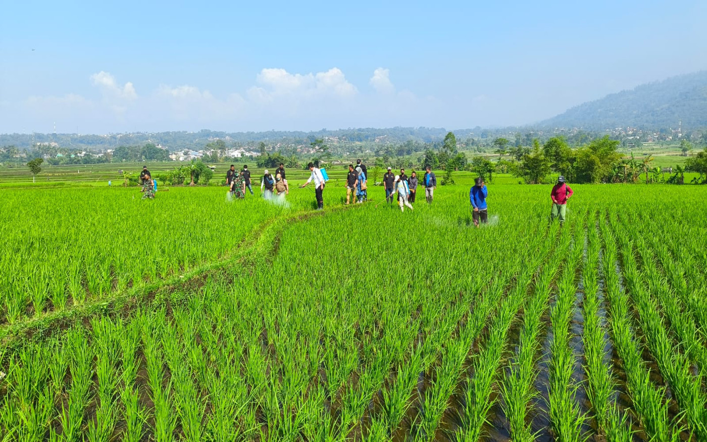
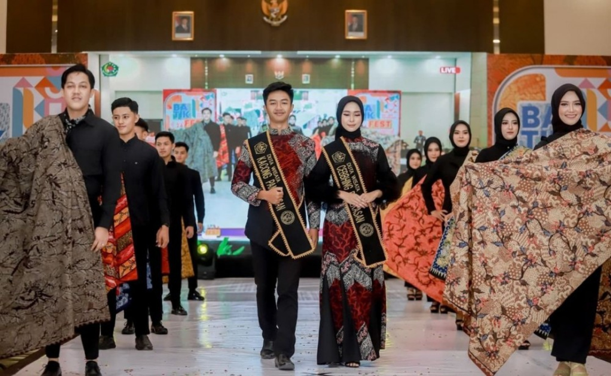
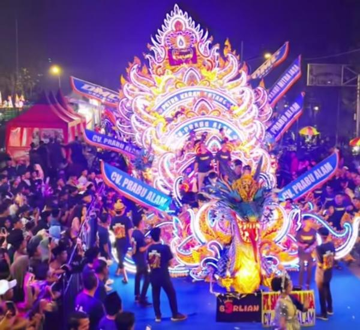
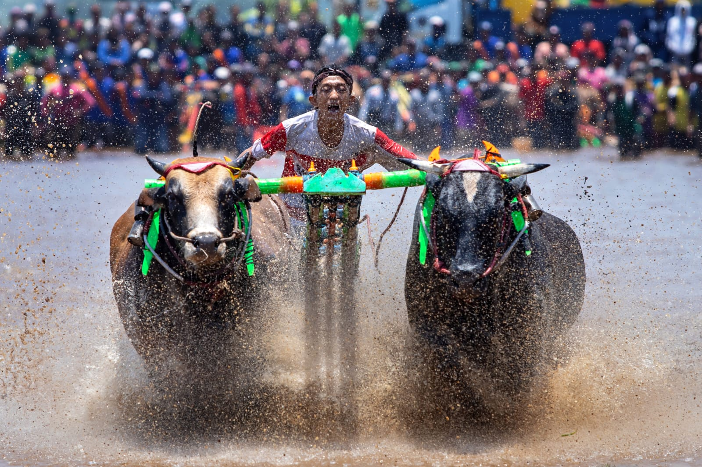
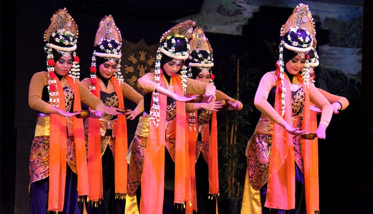
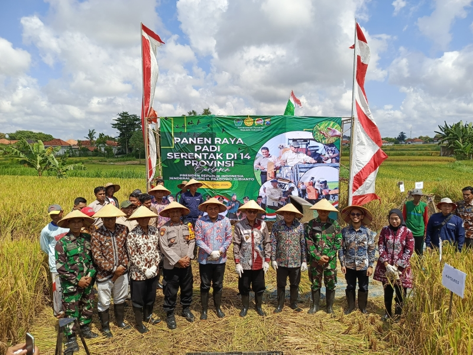
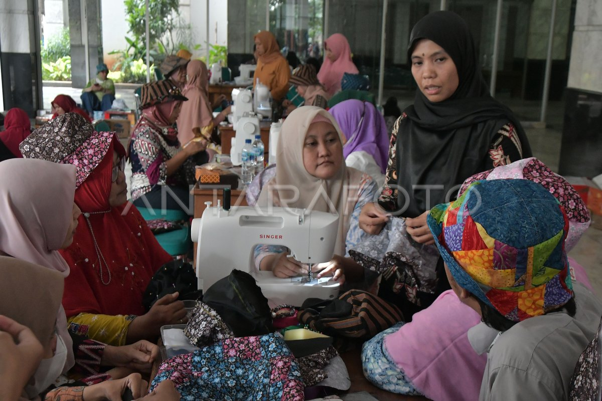

Kota Pamekasan, yang sering dijuluki sebagai "Bumi Gerbang Salam", merupakan pusat administratif dan denyut nadi ekonomi bagi Kabupaten Pamekasan di Pulau Madura. Secara historis, wilayah ini memiliki akar yang kuat sejak abad ke-15, bermula dari masa kekuasaan Ki Wonorono di Kerajaan Pamelingan. Seiring berjalannya waktu, Pamekasan berkembang menjadi pusat pemerintahan yang signifikan, bahkan sempat memegang peran penting sebagai ibu kota Karesidenan Madura pada masa kolonial, yang meninggalkan warisan arsitektur dan tata kota yang ikonik hingga saat ini.
Kota ini bukan hanya sekadar pusat pemerintahan, tetapi juga menjadi wadah pelestarian budaya Madura yang sangat kental. Landmark Monumen Arek Lancor yang tegak berdiri di jantung kota menjadi simbol abadi semangat perjuangan masyarakat setempat. Selain kekayaan sejarahnya, Pamekasan juga menawarkan pesona alam yang beragam, mulai dari keindahan pesisir pantai seperti Pantai Jumiang hingga potensi agrikultur dan kerajinan batik tulisnya yang sudah mendunia.
Jumlah Penduduk
Luas Wilayah
Jumlah Kecamatan
Jumlah Kelurahan
Pelayanan administrasi kependudukan.
Pembayaran pajak dan retribusi kota.
Pelayanan kesehatan masyarakat.
Program pendidikan masyarakat.





Semalam di Madura & Puncak Hari Jadi Pamekasan

Syukuran Panen Tembakau & Pasar Tani Pamekasan

Workshop Membatik & Pembuatan Sandal Lokal